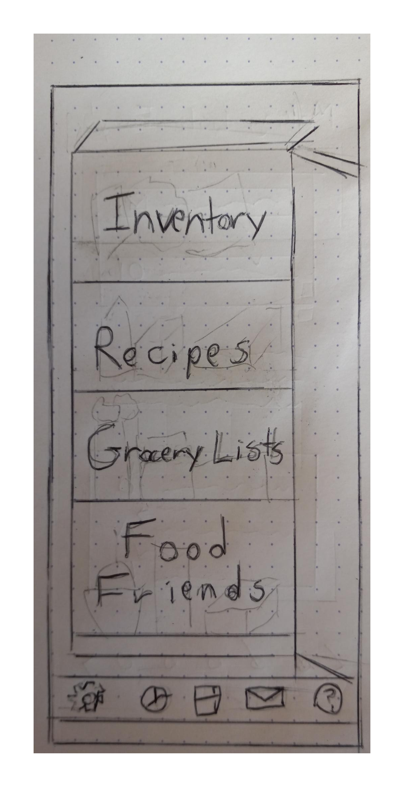
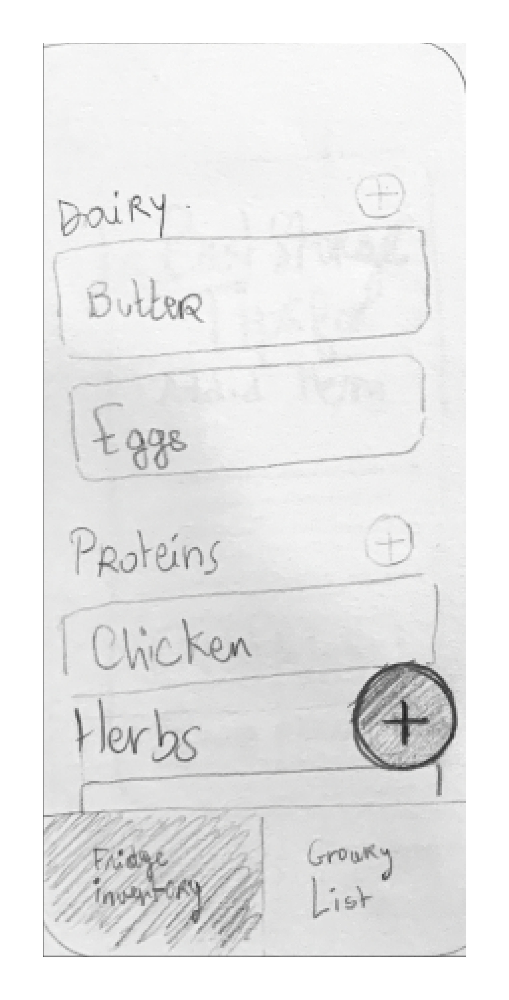
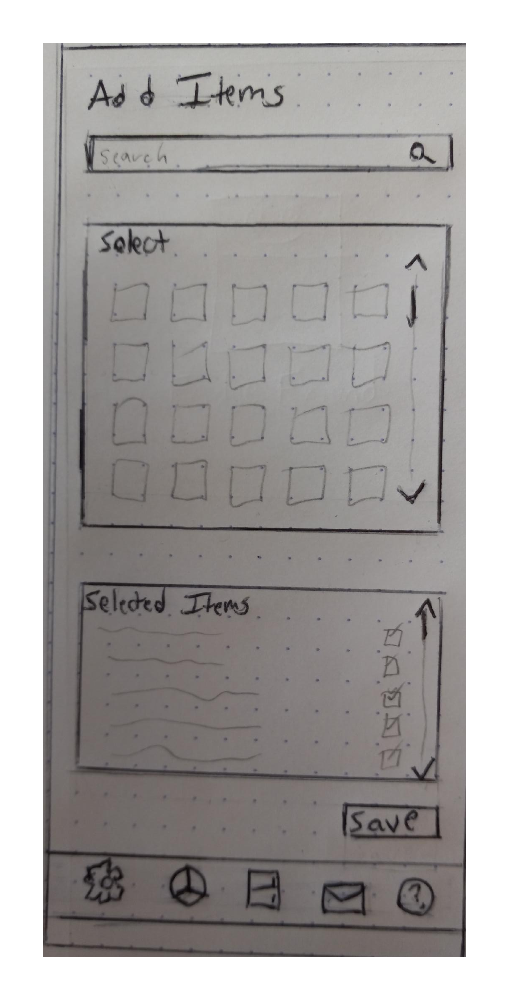
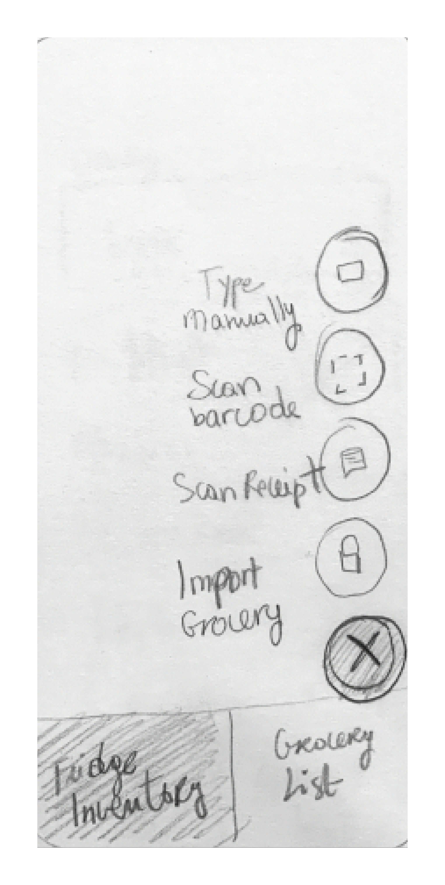
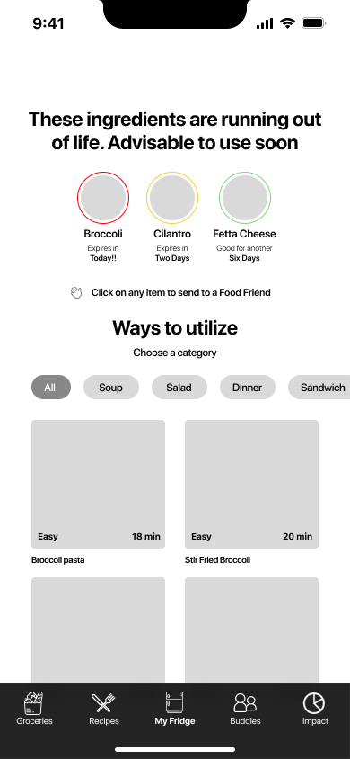
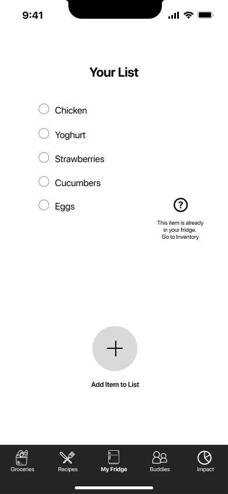
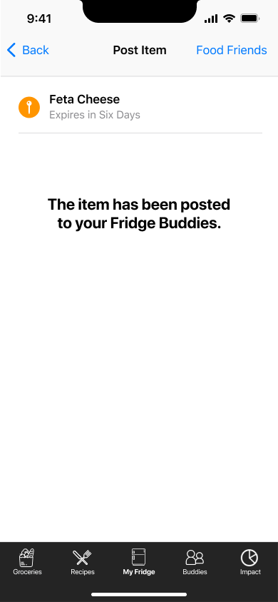
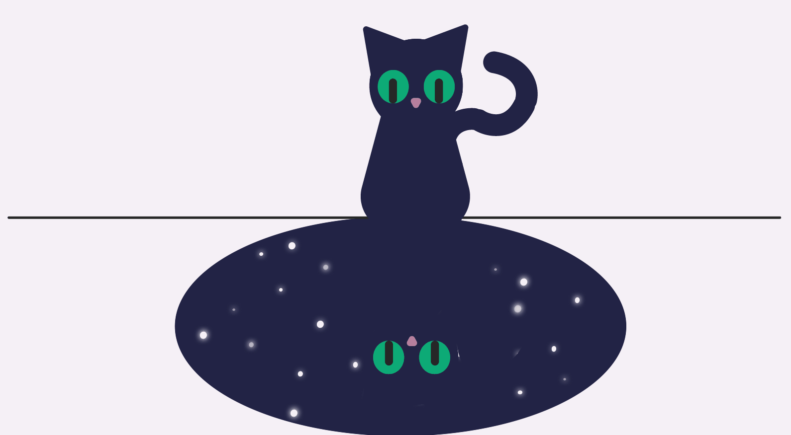

Deliver
Now, in the final stage, we will brainstorm interfaces with sketches, develop and deploy a testing plan, and apply iOS assets to our finalized design.
Sketches
   User Test Results

Task 1: Find a recipe that uses available ingredients
The recipe page had multiple items which confused users, so we streamlined the page.
Task 2: Add an item to your grocery list
The page was fairly straightforward, the floating add button was intuitive.
Task 3: Give away an item
There was confusion over "Food Friends" and "Fridge Buddies" phrasing, so we edited and made sure it was consistent.
Final Prototype


Next Steps
- Pantry Pal - Expand the inventory system to include your pantry items
- Multiple Grocery Lists - Save and manage multiple grocery lists for trips to different stores
- Sync With Smart Fridge - Incorporate the option to automatically sync inventories with your smart fridge

